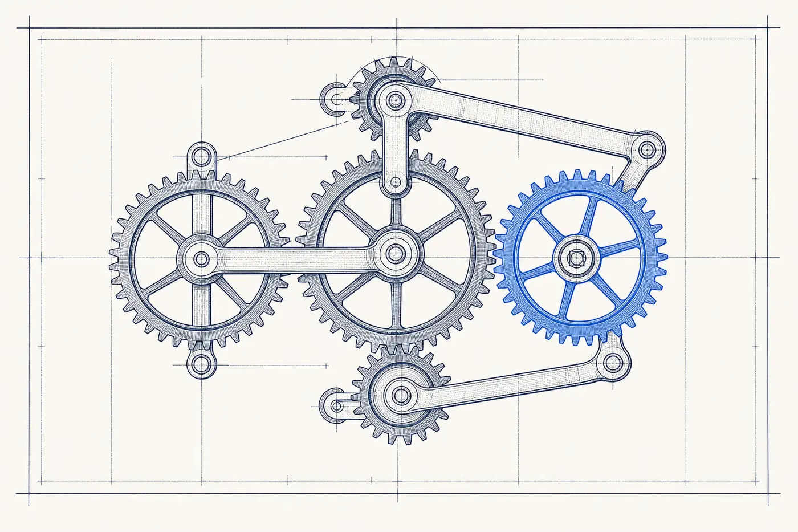

Automation
Marketing-automation platforms and the implementation firms that make them work: 59 US vendors covering workflows, lifecycle email, CRM integration, and operations.
The wall
The automation wall: growth created manual work faster than headcount can absorb it. Leads sit untouched for days, follow-up depends on memory, the email platform and the CRM disagree about who a customer is, and reporting means exporting spreadsheets. The company bought tools; nobody made them into a system.
What the discipline is
The Automation category covers marketing-automation software and the consultancies and agencies that implement it: lifecycle and drip email, trigger-based workflows, lead scoring and routing, CRM integration, and the marketing-operations practice that keeps the machine coherent. It is the systems pillar — the connective tissue under every other discipline.
How vendors in this category work
Software here is sold as subscriptions tiered by contacts or features; implementation partners sell setup projects and ongoing operations retainers. The pattern buyers should price in: platform license fees are usually the smaller half of the real cost, with configuration, integration, and ongoing management being where automation succeeds or quietly dies.
The US marketing automation market at a glance
Questions buyers ask
Questions sourced from live Google "People Also Ask" data for this discipline (harvested August 2026); answers are The Wall's own.
What is marketing automation in simple terms?
Marketing automation is software that executes repetitive marketing tasks by rule: when a prospect does X, the system does Y — sends the email, updates the CRM, alerts sales, adjusts the segment. It replaces memory and manual effort with triggers, so follow-up happens every time, at scale.
What is a common example of marketing automation?
The classic is the abandoned-action sequence: a prospect downloads a guide or leaves a signup half-finished, and the system automatically sends a timed follow-up series. Welcome sequences, lead-nurture tracks, post-purchase follow-ups, and lead scoring that alerts sales when interest spikes are equally standard.
Which platforms dominate marketing automation?
The market ranges from all-in-one suites (HubSpot, Salesforce Marketing Cloud, Adobe Marketo) to focused engines (ActiveCampaign, Klaviyo for e-commerce, Brevo at the budget tier). Platform choice matters less than fit with the CRM and the team’s capacity to run it — which is why implementation partners exist as a category.
Is marketing automation hard to implement?
The tools are approachable; the system design is not. Mapping lifecycle stages, defining triggers that reflect real buying behavior, integrating the CRM, and keeping data clean is operations work, and it is where most self-service implementations stall. Firms in this category exist mostly to do that design and integration work.
What is the difference between marketing automation and marketing operations?
Marketing operations is the discipline — the people and process that own systems, data quality, and measurement. Marketing automation is one of its instruments. An operations practice decides what should happen and why; the automation platform executes it.